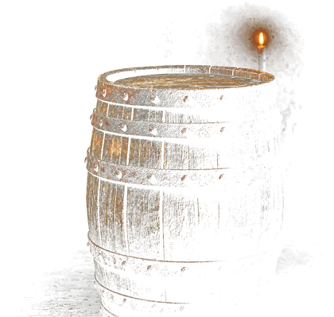
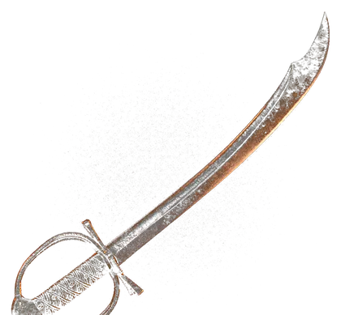
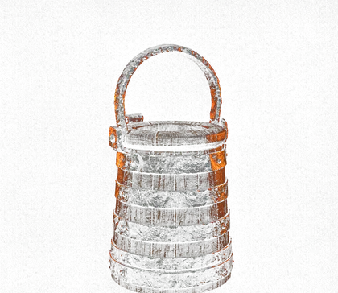
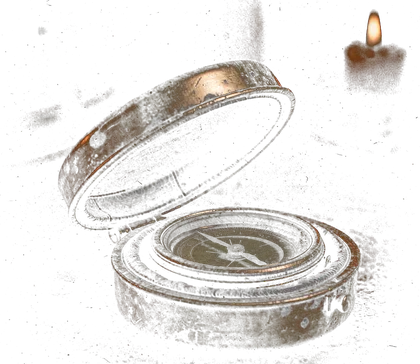
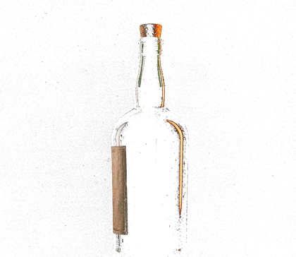
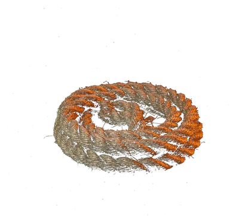

海贼王 · 经典篇章
一张藏宝图，六个停靠点。
第 1 章 / 共 6 章
空岛篇Skypiea
云海之上 · 白海
01
空岛篇Skypiea
云海之上 · 白海
剧情梗概
顺着冲天而起的上升海流，草帽一行被甩到了云层之上的「白海」 那里有岛、有居民，也有一个自称「神」的人
艾尼路用响雷果实统治这片天空六年，把整座岛一点点往毁灭推 他不在乎谁死谁活，他只想离开这里
路飞要的从来不是推翻谁，他只是受不了有人高高在上地自称神
最后，四百年没人在上面敲响过的黄金钟响了一次 地面上那个被当成「骗子」的探险家的后代，终于听见了回音
关键角色
-
艾尼路Enel
自称「神」，响雷果实能力者 能听见这片天空里的一切声音
-
甘·福尔Gan Fall
前任「神」，空之骑士 被夺走神位之后 他还在守着这片云海
-
卡尔加拉Kalgara
四百年前山多拉的战士 那个跨了四百年才兑现的约定的另一半
本篇章影像
名场面与台词
-
黄金钟响起
山多拉上空，四百年没有人敲响过的钟声响了一次，一直传到地面 树下那个老人抬起头——原来祖辈没有说谎。
-
那个自称神的人
全岛最怕的男人，被一个橡皮人一拳打飞。他后来真的去了他想去的地方——月球。
“人的梦想是不会结束的！”
第 2 章 / 共 6 章
恐怖三桅帆船Thriller Bark
魔鬼三角 · 浓雾海域
剧情梗概
在浓雾笼罩的魔鬼三角，草帽一行撞上了一艘比岛还大的船——恐怖三桅帆船。
这里的统治者「月光」莫利亚，靠夺走别人的影子来拼一支僵尸军团；被夺走影子的人，一见到阳光就会消失。
船上还站着一个只剩骨头的音乐家，布鲁克。他一个人在海上漂了五十年，只为了回去看一眼那头鲸鱼。
天亮之前，一行人要拿回所有人的影子。天亮之后，路飞多了一个伙伴。
关键角色
-
布鲁克Brook
黄泉果实能力者，骷髅音乐家。和鲸鱼拉布有一个五十年的约定。
-
月光·莫利亚Gecko Moria
影子果实能力者，靠掠夺别人的影子堆出一支不死军团。
-
巴索罗缪·熊Bartholomew Kuma
王下七武海。这一晚他上了船，开出了一个谁都不肯接的价码。
本篇章影像
名场面与台词
-
索隆替路飞扛下一切
熊要带走路飞之前，索隆顶了上去，把路飞承受过的痛苦原封不动地接到了自己身上。事后他站在血里，对着天上说：
「什么都没发生过。」
-
一个人的独奏
在海上漂了五十年，他还在拉那首曲子，还在等一次重逢。
“如果连伙伴都保护不了，那还当什么世界第一！”
第 3 章 / 共 6 章
顶上战争Marineford
马林梵多 · 海军本部
剧情梗概
艾斯要被公开处刑。行刑地点在海军本部马林梵多，迎战的是白胡子海贼团和它全部的旗下战力。
这是大海上从没出现过的阵仗：十万海军、三大将、七武海，对上一个时代里最强的男人。
路飞从因佩尔监狱一路打上来，他来这里只有一个目的——把哥哥带回去。
可他没能带回去。这一天之后，大海上的力量天平彻底翻了。
关键角色
-
波特卡斯·D·艾斯Portgas D. Ace
白胡子海贼团二队长，烧烧果实能力者，路飞的结义哥哥。
-
白胡子Edward Newgate
震震果实能力者，被称作「世界最强的男人」。
-
黑胡子Marshall D. Teach
这一场混战里，他摘走了那颗最大的果子。
本篇章影像
名场面与台词
-
站着死的白胡子
身上插满刀枪，人却始终没有倒下。他留下的最后一句话，把这一整代人的方向都定死了：
「ONE PIECE 是真实存在的！」
-
哥哥的最后一句话
艾斯没有后悔。他最后想说的，是谢谢——谢谢有人肯认他这个弟弟。
“给我个面子。”
第 4 章 / 共 6 章
鱼人岛篇Fishman Island
海底一万米 · 龙宫王国
04
鱼人岛篇Fishman Island
海底一万米 · 龙宫王国
剧情梗概
两年后重新出发的草帽一行，从香波地群岛下潜一万米，到了海底的鱼人岛 这座岛背着一笔几百年的旧账： 人类对鱼人的奴役，鱼人对人类的恨，一代传一代，谁都没能把它解开 路飞在这儿做的事很直接——他当着所有人的面，把这座岛划进了自己的地盘 而岛上那个总在哭的人鱼公主，从这一天起不再是只能躲在硬壳塔里的人了
关键角色
-
白星Shirahoshi
鱼人岛的人鱼公主，古代兵器「海王」波塞冬。
-
乙姬Otohime
上一代王妃。用一辈子去讨一个「鱼人和人类一起生活」的答案。
-
霍迪·琼斯Hody Jones
新一代里最纯粹的恨——他甚至没有被人类伤害过。
本篇章影像
名场面与台词
-
公主走出硬壳塔
那个动不动就哭的人鱼公主，第一次敢从塔里走出来，站到光底下。
-
这片海归谁管
路飞没打算讲道理，他直接把这座岛认成了自己的地盘。
「这座岛，是我的地盘。」
“终有一天，人类和鱼人能够和谐共处！”
第 5 章 / 共 6 章
德雷斯罗萨篇Dressrosa
新世界 · 玩具之国
05
德雷斯罗萨篇Dressrosa
新世界 · 玩具之国
剧情梗概
新世界的玩具之国，会走路的玩具和人类一起上街 没有人觉得奇怪——因为所有人的记忆都被动过了 这个国家的国王是多弗朗明哥 十年前他走进来，一夜之间拿下王位，然后把一部分国民变成了玩具 竞技场、小人族、革命军、海军，几拨人各怀目的，撞在了同一座城里 最后路飞要面对的不是一个国王，是一个把「赢」当成唯一道理的人
关键角色
-
多弗朗明哥Doflamingo
线线果实能力者，王下七武海，也是地下世界的 Joker。十年前一夜夺下这个国家。
-
特拉法尔加·罗Trafalgar Law
一心要把明哥拨倒的人。这一战他和路飞结了盟。
-
维奥拉Viola
被换掉身份的公主。她跳了十年舞，就为了留住这个国家。
本篇章影像
名场面与台词
-
四档第一次亮相
打到最僵的时候，路飞把「四档」亮了出来。这一下，格局变了。
-
赢的人写规则
明哥这一整套逻辑，说出来只有一句：
「正义这种东西，是由胜利者书写的」
“败者食尘”
第 6 章 / 共 6 章
蛋糕岛篇Whole Cake Island
托特兰 · 大妈海域
06
蛋糕岛篇Whole Cake Island
托特兰 · 大妈海域
剧情梗概
山治走了。他留下一句话，说自己是自愿的，让路飞别再追 他没说实话。他的家族拿整船人的性命逼他回去，去完成一场政治联姻 于是草帽一行闯进了大妈的地盘托特兰——一个由食物和结婚蛋糕堆起来的国 一个会吃人的国 这一章里，山治要说出口的那句话，比任何一场仗都难打
关键角色
-
山治Sanji
文斯莫克家的第三子，草帽的厨师。这一章的主角。
-
夏洛特·布琳Pudding
三眼族的女孩，被安排成这场婚礼的另一半。
-
夏洛特·卡塔库栗Katakuri
大妈海贼团最强的儿子。见闻色强到能看见一小段未来。
-
文斯莫克·伽治Vinsmoke Judge
山治的父亲。把儿子当工具用的那个男人。
本篇章影像
名场面与台词
-
雨里那句真话
雨中的沙滩上，山治终于说出了他心里那句，而不是嘴上那句：
「我想回去……回到桑尼号上。」
-
见闻色对见闻色
最后两个人面对面站着，谁都没有躲，然后有一个人先倒了下去。
“尊重女性，这是从恐龙时代就定下的规矩”





